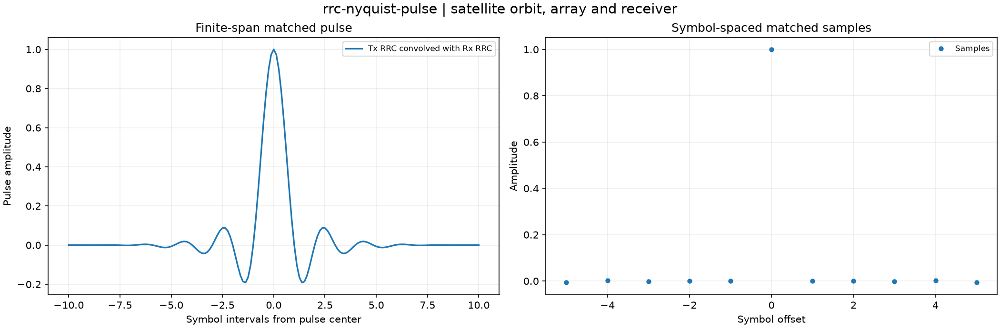

Reproducible satellite orbit, array and receiver. Units and field components are printed on the scientific axes. peak d-q quantities use exp(+i omega t); terminal currents point into the protected line.
Sealed numeric archive | Summary CSV | Physical parameters | Run request | Source and environment

| maximum_off_center_isi | 0.006675028162977193 |
|---|
These are simulations, not hardware measurements. Network-model, measurement, timing and statistical uncertainty require distinct convergence checks. Singular or unilluminated data use explicit masks.
Source revision: 05231131f921489a3886ccbb7412a65087ae53f6.
Dirty checkout: False.
Configuration SHA-256: bd9a3f63401faf3bfa7df3bcbf6551058feb2846e30296996fef002c194a4b0a.
Replay preserves original source and parameter provenance. SHA-256 manifests detect changed bytes; they are unsigned integrity records, not certificates of physical validity.